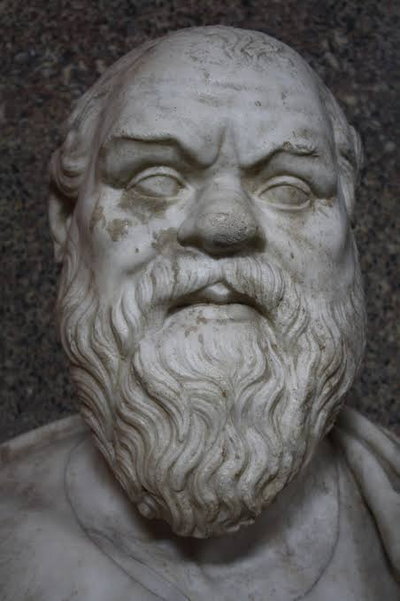
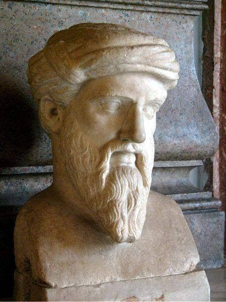
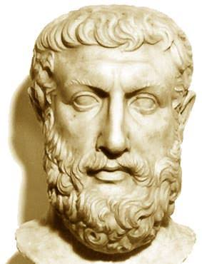
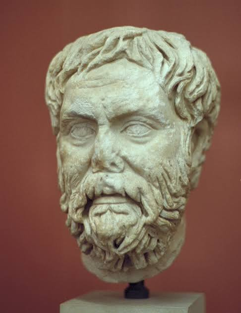
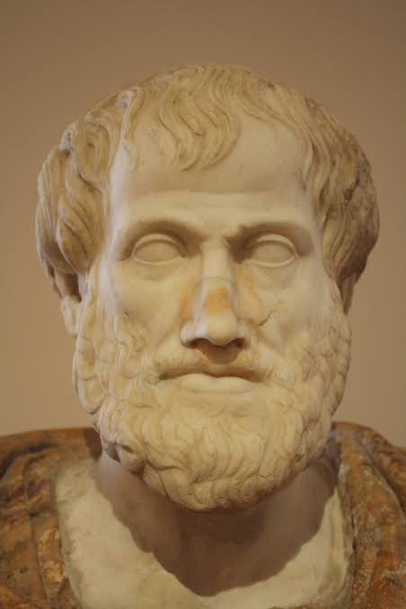
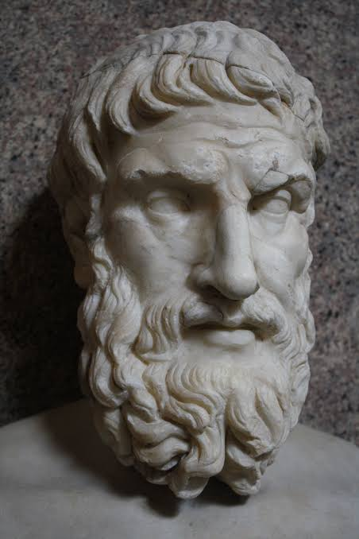

Plato of Athens

Plato was an ancient Greek philosopher of Classical Athens widely considered the foundational thinker of the Western philosophical tradition. As an innovator of the literary dialogue and dialectic forms, he influenced virtually all areas of theoretical and practical philosophy. He founded the Academy in Athens, where he taught the doctrines that became known as Platonism, most notably the Theory of Forms, which posits that the material world is merely a shadow of a higher, immutable reality composed of abstract concepts.
Socrates of Athens

Socrates was an ancient Greek philosopher from Classical Athens, widely recognized as one of the first major figures in Western moral philosophy and the primary inspiration for his student Plato, who shaped the trajectory of Western thought. An enigmatic figure who authored no texts, Socrates is known primarily through the posthumous accounts of classical writers, most notably his students Plato and Xenophon. These records take the form of dialogues in which Socrates and his interlocutors investigate philosophical concepts through a rigorous question-and-answer framework, giving rise to the Socratic dialogue literary genre. Emblematic of his ethical commitment to critical inquiry, he famously maintained that "the unexamined life is not worth living."
“The only true wisdom is in knowing you know nothing.”
- Socrates
Pythagoras of Samos

Pythagoras was an ancient Ionian Greek philosopher, polymath, and the eponymous founder of Pythagoreanism. His political and religious teachings were widely influential in Magna Graecia and profoundly shaped the philosophies of Plato, Aristotle, and, by extension, the broader Western tradition. While modern scholars debate his early education and influences, there is a general consensus that he relocated to Croton in southern Italy around 530 BCE, where he established a school whose initiates were reportedly bound by secrecy and maintained a communal, ascetic lifestyle. Centered around his conviction that the universe is fundamentally mathematical and governed by precise numerical ratios and harmonies, his doctrines bridged early mystical religion and proto-scientific reasoning.
“No man is free who cannot control himself.”
- Pythagoras
Parmenides of Elea

Parmenides was a pre-Socratic Greek philosopher from Elea in Magna Graecia (southern Italy). His singular known work is a philosophical poem in dactylic hexameter verse, frequently referred to as On Nature, of which only fragments survive. Because the poem's textual integrity is exceptionally well-preserved compared to the works of most other pre-Socratic contemporaries, classicists can reconstruct his philosophical doctrines with notable precision. In the poem, Parmenides delineates two distinct perspectives on reality: the way of Aletheia (truth), which posits that ultimate reality is a single, unchanging, timeless, and uniform whole wherein change is impossible; and the way of Doxa (opinion), which accounts for the realm of sensory appearances and common human perceptions, which he considered deceptive and illusory.
Pyrrho of Elis

Pyrrho was a Greek philosopher of classical antiquity credited as the first Greek skeptic and the founder of Pyrrhonism, the earliest school of Western philosophical skepticism. Historical sources indicate that the primary objective of Pyrrho's philosophy was the attainment of ataraxia - a state of untroubledness and freedom from mental perturbation, which he argued, could be achieved by abstaining from dogmatic beliefs regarding thoughts and sensory perceptions. Like Socrates, Pyrrho authored no written works; consequently, most surviving insights into his philosophy are derived from the accounts of his student Timon of Phlius. Due to this scarcity of primary records, exact details regarding the nuances of Pyrrho's original teachings and how they diverged from later iterations of Pyrrhonism remain a subject of scholarly debate.
Aristotle of Stagira

Aristotle was an ancient Greek philosopher and polymath whose extensive writings spanned the natural sciences, philosophy, linguistics, economics, politics, psychology, and the arts. He advanced empiricism and Aristotelianism, arguing that knowledge originates from sensory experience and the systematic observation of the natural world. Among his foundational achievements, he established the framework of formal logic, pioneered the categorization of the empirical sciences, and formulated a system of virtue ethics centered on the concept of the "Golden Mean"- the desirable middle between two extremes, excess and deficiency. As the founder of the Peripatetic school of philosophy at the Lyceum in Athens, he initiated the wider Aristotelian tradition, which set the structural and intellectual groundwork for the future development of modern science.
“We are what we repeatedly do. Excellence, then, is not an act, but a habit.”
- Aristotle
Epicurus of Samos

Epicurus was an ancient Greek philosopher who founded Epicureanism, a philosophical school teaching that the mastery of desires, the elimination of unnecessary fears, the cultivation of friendship, and virtuous living culminate in a pleasant life and enduring happiness as the highest good. Epicurus advocated that the ideal environment for philosophical pursuit was a self-sufficient life shared among friends; he and his followers famously lived on simple provisions while discussing a broad spectrum of philosophical topics at "The Garden," the school he established in Athens. He further taught that while gods do exist, they remain entirely detached from human affairs and do not intervene in the world.